摆棋工具使用说明
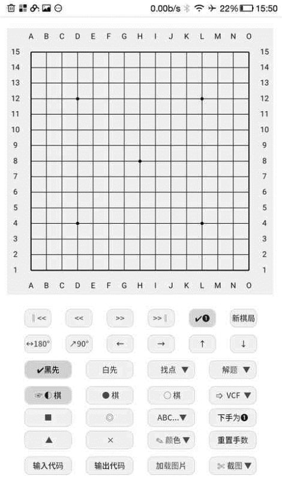
.
建议使用opera ，chrome浏览器打开，兼容性更好
按钮功能说明
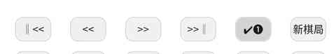
从左到有依次编号
- 退到第一手
- 退一手
- 前进一手
- 前进到最后一手
- 显示，隐藏手数
- 清空棋盘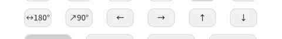
- 左右翻转
- 顺时针旋转90°
- 左移一列
- 右移一列
- 上移一行
- 下移一行

- 计算黑子
- 计算白子3-4.计算功能
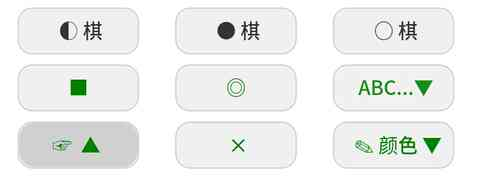
- 轮流添加棋子
- 单独添加黑子
- 单独添加白子
4-8 添加各种标记
9.选择标记的颜色
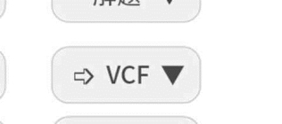
- 找到多套VCF时选择显示VCF
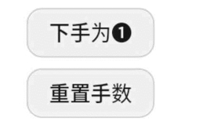
1.取消前面的手数，下一手开始为第一手
- 恢复正常手数。
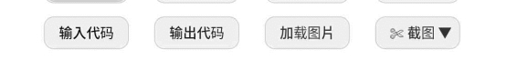
1-2.输入-输出代码
- 加载图片(快速把一张图片的棋子摆入棋盘)
- 截图保存
加载图片模式下的按钮
- 选定棋盘，开始摆棋
- 添加黑棋，白棋
4.把添加的棋子，自动摆入15路棋盘
5-6.设置棋盘大小
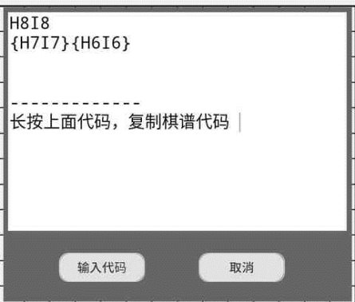
代码说明，第一行标准代码，按照坐标顺序对应黑白棋子，会显示手数。后面第一个{}内是黑子坐标，第二个{}内是白子坐标。不显示手数。输入代码时软件会自动忽略无意义字符 “h8jjk8” = “h8k8”
棋盘的基本操作
棋盘会根据用户选择的按钮分别处于3种模式。1-轮流添加棋子模式。2-单色添加棋子模式。3，添加标记模式。在不同模式下点击棋盘会有不同效果。
- 单击 (添加或删除 棋子，标记)
选择好对应的棋子，标记按钮后，在棋盘落子点单击，可以添加对应的棋子，标记。再点击一次是删除。
如果要一次性删除所有标记，同时保留棋子，可以翻转棋盘
- 双击 (快速悔棋，手动输入标记)
快速悔棋，在轮流添加棋子模式下，要从第n手悔棋到第k手，只要双击第k手棋。
手动输入标记，在棋盘空子出或者标记上面双击触发。
- 长按 (取消最后一手红色显示，手动输入标记)
在最后一手棋上面长按，可以取消/恢复 红色显示
手动输入标记，在棋盘空子出或者标记上面长按触发。
- 拖动 (加载图片时，拖动虚线框对齐棋盘)
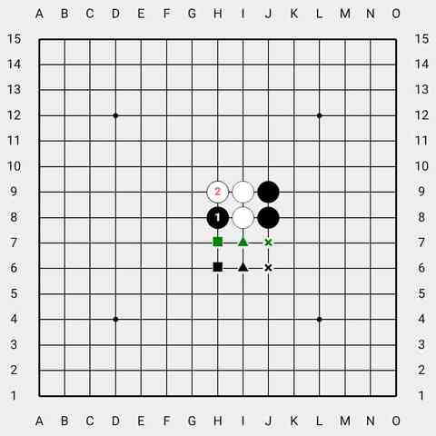
加载图片功能(快速把一张图片的棋子摆入棋盘)
点击加载图片按钮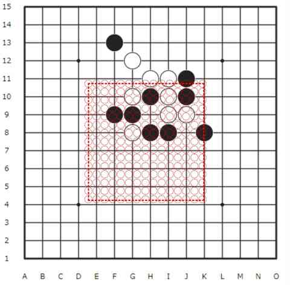
打开一张图片，会显示虚线框。点击图片的两个对角初步对齐棋盘边框
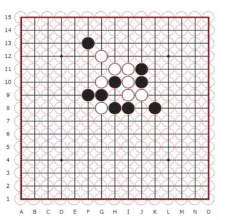
在棋盘的对角附近点击，可以进行微调，精准对齐棋盘。
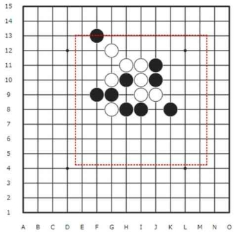
还支持拖动对齐边框(先在棋盘上点击一下，在点击完0.5秒内单指按住棋盘触发拖动)
对齐棋盘后，点击选定棋盘按钮。开始摆棋子
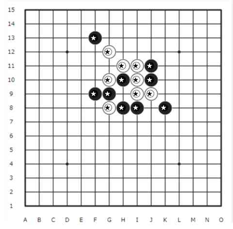
分别把黑白棋子对好，如上图。再点击摆入棋盘
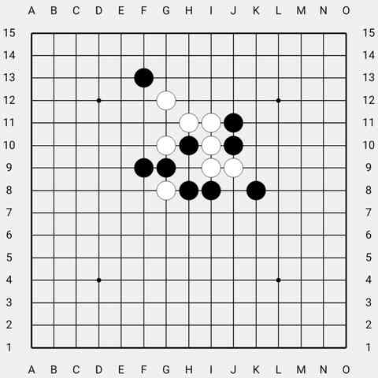
成功摆好棋子
有时候有的图片不能完整的显示15路棋盘图片。就要选择行数，和列数。
下面举个例子

这个棋盘选择9行，9列

对好棋盘后选定棋盘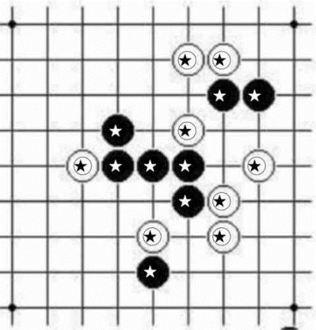
摆好棋子后，长按图片上面的H8点摆入棋盘。
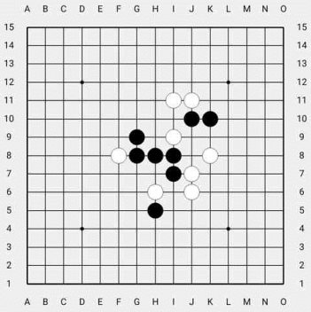